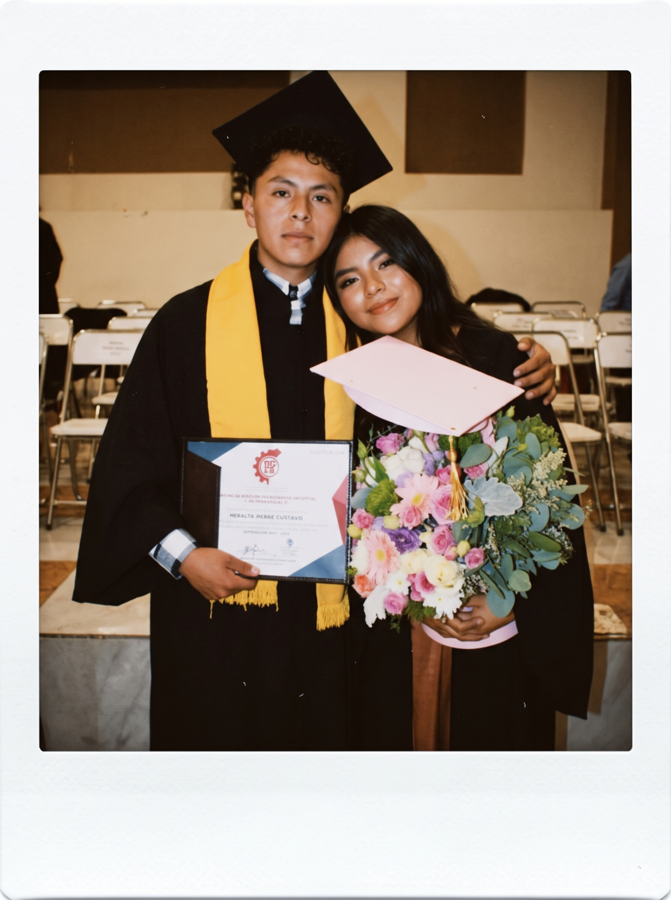

Mi niña, aunque mañana no podamos vernos en persona, no quería que este día pasara sin darte un detalle.
Holaa corazón de melón, hoy es un dia especial para ti y tambien para mi, ya que un dia como hoy hace ya 18 años nacio una persona muy linda e increible, con la cual jamas habria imaginado todo lo que iba a vivir a su lado. gracias por ser parte de mis dias desde hace ya 4 años y hoy solo te puedo decir ¡¡MUCHAS FELICIDADES!!. Hoy te conviertes en una mujer, en la mujer mas maravillosa y de buen corazon que jamas he conocido, estoy muy orgulloso de ti por todo lo que haces siempre, por esa forma de pensar tan dedicada que tienes y por la persona que eres conmigo y con todos los que te amamos y te queremos. Estoy orgulloso de la mujer en la que te has convertido y yo se que puedes lograr todo lo que te propongas en la vida, me hubiera encantado ser parte de ella y aun no doy por perdida esa posibilidad, de cualquier forma siempre voy a estar para ti, para apoyarte en todo lo que necesites en cualquier momento sin importar nada y para verte triunfar en tus sueños y metas ya que es algo que siempre soñe ver y que yo se que eres capaz de lograr todo eso.
Muchas muchas felicidades mi niña, te quiero mil millones y gracias por fomar parte de mi vida en todos los aspectos. Hoy talvez no pueda estar ahi contigo fisicamente pero aunque de lejitos no queria dejar pasar el dia y esta fecha tan especial y esta es la unica manera de hacerte tu cartita, espero que te guste y que te la pases muy bien el dia de hoy, aunque sea en el trabajo espero que este pequeño detalle te logre sacar una sonrisa y alegrar un poquito mas tu dia. ¡¡¡FELICES 18 A LA CUMPLEAÑERA MAS LINDA E INCREIBLE DEL MUNDO!!!